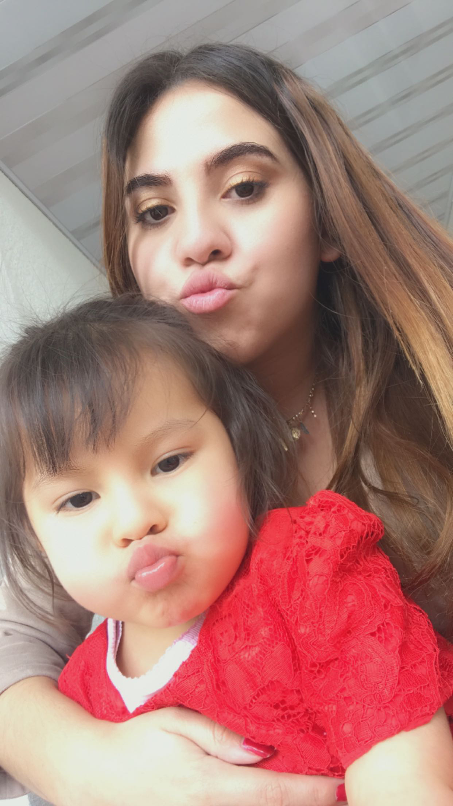
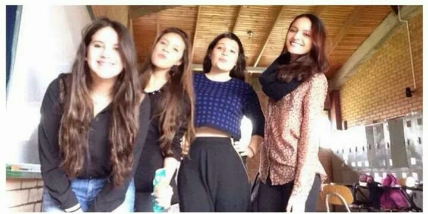
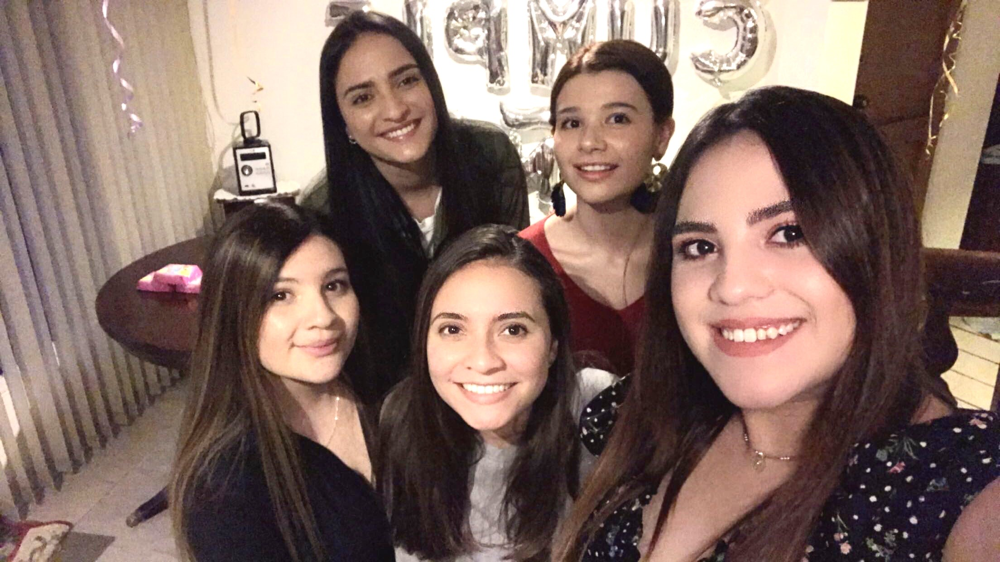
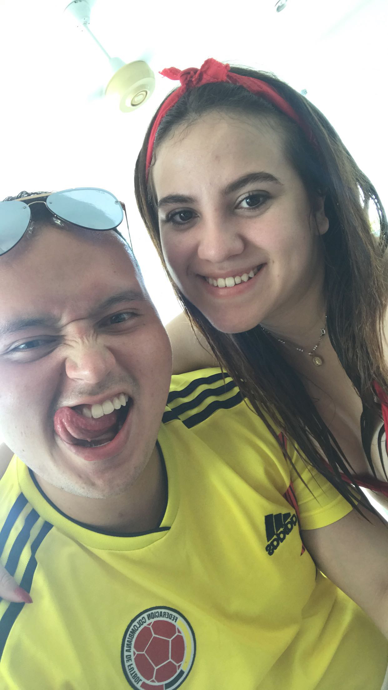

¿QUIEN SOY?
KAREN LONDOÑO

Soy Karen Londoño, naci el 29 de septiembre de 1997 en la ciudad de Bogotá actualmente soy estudiante de Cominicación socail y periodismo de la Universidad Sergio Arboleda.
MI FAMILIA


Mis padres son Adriana Sandoval y Jorge Londoño, tengo una hermana menor llamada Nataly pero por parte de papá tengo 4 medio hermanas Carolina, Leidy, Laura y Camila.
En 2017 me converti en tía, mi sobrina se llama Amelie es mi adoración actualmente tiene 4 años , es muy parlanchina y consentida.

Mis padres se separaron cuando tenia 10 años, por lo cual actualmente vivo en la casa de mis abuelos maternos donde vivimos mi mamá, mi tío, mi abuela y mi hermana
MIS AMIGOS
Tengo 4 mejores amigas, hemos sido amigas desde el colegio; ellas son: Paula, peco, aleja y pinto.

Mi mejor amigo se llama Andres, estudia Derecho en mi misma universidad
